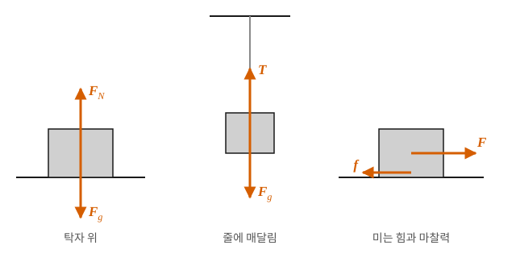

물체에 작용하는 힘에는 다음과 같은 것들이 있다.

| 힘 | 방향과 크기 | 식 |
|---|---|---|
| 중력 (gravitational force) | 지구 중심 쪽(아래)으로 당긴다 | (5.2.1) |
| 무게 (weight) | 땅에서 볼 때 물체가 떨어지지 않게 받치는 데 드는 힘의 크기 | (5.2.5) |
| 수직항력 (normal force) | 면이 물체를 면에 수직으로 민다 | (5.2.6) |
| 마찰력 (frictional force) | 면을 따라, 미끄러지려는 방향의 반대쪽으로 작용한다 | 크기는 6장 |
| 장력 (tension) | 팽팽한 줄이 양 끝에서 당긴다 |
엘리베이터 안의 저울은 수직항력을 잰다. 엘리베이터가 위 방향으로 가속도 를 가지면 저울 눈금은 다음과 같다.